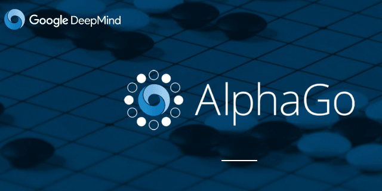
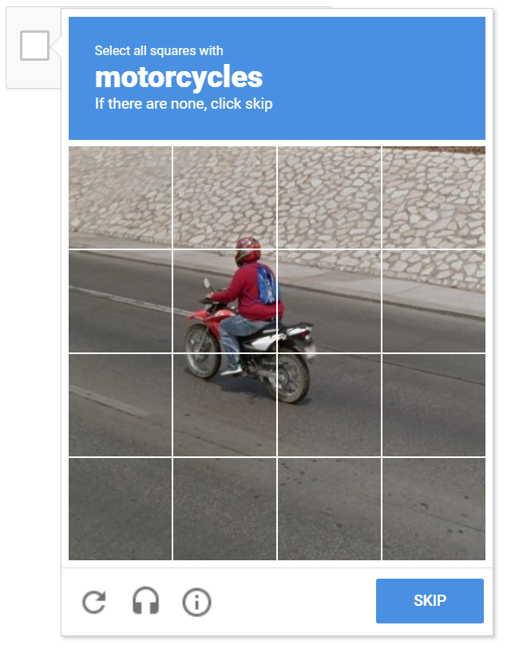
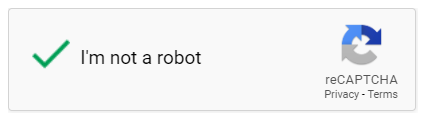

Etat de l’art¶
Qu’est ce que le Deep Learning ?¶
Définition¶
L’apprentissage profond (Deep Learning), une sous branche de l’apprentissage machine (Machine Learning) qui est elle-même une sous branche de l’Intelligence Artificielle (noté IA). Le Deep Learning est un ensemble de méthodes visant à extraire un maximum de primitives des informations contenues (features) dans un jeu de données. Ces features servent à produire un modèle dont le but est de représenter un concept de la manière la plus abstraite possible. Le Deep Learning utilise des couches (layers) de neurones pour construire un réseau de neurones (noté NN) permettant par exemple la classification de données.
Cela sert, par exemple, à obtenir une représentation interne à la machine de ce qu’est un chien si l’on considère que l’apprentissage a été tourné vers la reconnaissance de chiens. Le fait que ce concept soit représenté de la manière la plus abstraite possible permet de rendre capable la machine de pouvoir appliquer ces représentations à un maximum de contenu différent. Le but est d’outrepasser les limites des programmes qui, par exemple, faisaient que jusqu’à maintenant une simple rotation sur une image provoquait sa non reconnaissance par le système.
Evenements importants¶
Le terme de Machine Learning arrive en 1959 avec Arthur Samuel et le premier algorithme capable de s’améliorer au fur et à mesure de son utilisation (ici, un jeu de dames). C’est en effet là que réside la clé du concept de Machine Learning : un programme capable de s’altérer lui-même sans intervention humaine. L’information que stocke un tel système est dynamique et peut être réévaluée à n’importe quel instant lorsque exposée à plus de données.

Deep Blue, le fameux superordinateur spécialiste des échecs, bat en 1997 Garry Kasparov le champion du monde aux échecs grâce à une analyse en profondeur et l’évaluation des différentes positions des pions sur le plateau de manière bien plus performante que son adversaire. Plus récemment, c’est AlphaGo qui en 2016 et 2017 est sacré champion du monde au jeu de go après s’être battu contre Lee Sedol et Ke Jie.
Fonctionnement du Deep Learning¶
Le fonctionnement du Deep Learning repose sur le souhait que cette méthode soit capable de reproduire le raisonnement humain, le cheminement de la pensée humaine. Comme dit précédemment, qu’un chien soit noir, blanc, marron, un mixe de tout ça, qu’il soit présenté à l’envers, en couleurs inversées, n’est pas censé impacter le concept de chien stocké en mémoire. Chez l’être humain, c’est le cas, il est capable d’extraire très rapidement, et ce depuis les plus bas âge, les primitives permettant à son modèle interne d’être le plus robuste possible face au changement.
Le Deep Learning est en somme une sorte de Machine Learning mais en bien plus efficace. Il s’est avéré être l’outil incontournable en terme de reconnaissance d’images, de sons et de langages naturels. Ils sont très largement utilisés dans ces contextes de reconnaissance de données photos, vidéos, sonores dont on verra certaines applications plus loin. Le terme « profond » (deep) d’apprentissage profond fait référence au nombre souvent élevé de « couches » (layers) se situant entre le canal d’entrée des informations (input) et le canal de sortie (output). Ces layers se situant entre l’entrée et la sortie du réseau sont appelées hidden layers ou couches cachées. Plus il y en a, plus l’on peut qualifier notre système de deep.

Les deux types d’apprentissages¶
Il existe deux types d’apprentissage, le supervisé et le non supervisé. Ces deux techniques ont des buts qui se rejoignent en certains points mais qui sont au final relativement différentes : L’apprentissage supervisé a pour but d’entraîner un programme pour le rendre capable de reconnaître certaines structures d’informations grâce auxquelles il pourra produire des prédiction, alors que le but de l’apprentissage non supervisé est d’extraire des relations entre certaines données pour faire ressortir des processus sous-jacents plus complexes.
L’apprentissage supervisé nécessite donc de disposer au préalable des informations correspondant à la nature des données qu’il va traiter, et donc en somme, la solution à chacun des échantillons qu’il va parcourir. C’est le programmeur qui doit fournir pour chaque échantillon le label qui lui est associé. Par exemple, pour un algorithme de reconnaissance d’image il est possible d’envoyer une image de chaussure avec le label « chaussure », permettant au programme d’apprendre et de pouvoir affiner son concept de chaussure durant les envois de données tests.
L’apprentissage non supervisé, quant à lui, ne dispose pas de ces données au préalable. Pour la reconnaissance d’image, l’algorithme aura uniquement besoin des images et va alors par lui même apprendre à différencier les chaussures d’autres images. Pour cela, il va apprendre à classer les donnés dans des groupes homogènes, une technique qui se nomme « clustering ».
La majorité des résultats obtenus avec le Deep Learning dépend en grande partie de la qualité des données bruts fournies au système. C’est un aspect que l’on peut souvent négliger lorsque l’on n’est pas accoutumé à de telles méthodes mais il définit en grande partie la qualité de notre représentation interne après entraînement. Un mauvais jeu de données mal construit ou non représentatif du concept visé va généralement conduire à un échec de prédiction…
Annexe¶
Si les différences qui résident entre les trois concepts que sont Intelligence Artificielle, Machine Learning et Deep Learning vous sont toujours quelque peu floues, nous vous invitons à regarder la vidéo à l’adresse suivante qui, certes est en anglais, mais permet tout de même de bien comprendre les relations en qui existent entre ces trois termes.
Les applications¶
Le reCAPTCHA¶
{kind=link}
L’une des nombreuses applications de Deep Learning que l’on croise souvent de nos jours est le reCAPTCHA. Sur Internet, vous avez probablement déjà rencontré une boîte de dialogue vous invitant à sélectionner des images parmis une grille d’images en fonction d’une certaine catégorie (voiture, bus, feu de signalisation, devantures de magasin, etc.), réécrire des mots distordus, et ce dans le but d’accéder à une page internet ou finaliser une inscription. L’outil alors utilisé ici s’appelle un reCAPTCHA. Le reCAPTCHA est l’adaptation par Google du CAPTCHA, une technologie développé à l’Université Carnegie-Mellon qui vise à différencier les humains des machines. Google se sert de cette technologie pour entraîner ses algorithmes de Deep Learning sur des échantillons d’images par exemples et faire d’une pierre deux coups. Les données que vous fournissez en répondant correctement à la question posée sont alors renvoyées vers les serveurs de Googles et permettent une contribution à l’échelle internationale qui vise à améliorer les algorithmes du géant.
{kind=link}
Le traitement Automatique du Langage Naturel¶
Comme vu précédemment, la plupart des applications existantes du Deep Learning, et donc du Machine Learning plus généralement, visent les informations de type image, son ou vidéo.
Un autre grand domaine d’application est celui du Traitement Automatique du Langage Naturel (Natural Language Processing, noté NLP). On pourra citer par exemple tous les assistants personnels développés par les leader du marché en terme de technologie mobile (tels que Google Assistant, Siri, Amazon Alexa et bien d’autres encore) qui en récupérant toutes nos données vocales et transcrites parviennent de mieux en mieux à personnaliser l’expérience utilisateur (et ce, parfois au dépend de la vie privée).
{kind=link}
Plus récemment, c’est avec BERT (Bidirectional Encoder Representations from Transformers), un système de NLP que de nombreux avancement ont été faits dans les domaines de traitement des inférences du langage naturel (Natural Language Inference, noté NLI) mais aussi de la production de réponse aux questions.
Les véhicules autonomes¶
On pourra aussi mentionner l’arrivée croissante des véhicules autonomes dont notamment ceux de Tesla et leur autopilote en constant apprentissage grâce aux 24 millions de kilomètres parcourus par jours. Ces kilomètres parcourus servent, grâce aux différents capteurs embarqués et à une constante liaison satellite, à faire parvenir aux super-ordinateurs de Tesla des milliards de données télémétriques permettant chaque jours de renforcer la sécurité des passagers.
La résolution de casse-têtes¶
En ce qui concerne l’état de l’art du Deep Learning appliqué à la résolution de casse-têtes, à l’heure actuelle il n’existe pas encore énormément de recherches ni de réelles applications qui s’avèrent utiles dans la vie de tous les jours.
L’une des applications revenant le plus souvent lors de nos recherches était celle de la résolution de jigsaw puzzles, les puzzles de reconstruction d’image en 2 dimensions. Le format de ces puzzles leur permet une très bonne intégration au travers de modèles de Deep Learning car ceux-ci sont constitués de multiples images partageant des traits communs et des dimensions similaires (la plupart du temps).
Il a alors été possible d’appliquer ce même schéma sur de la reconstruction de fragments issues de fouilles archéologiques. Comme le mentionnent M-M. Paumard et al. dans leur article de 2018, la reconstitution de ces fragments demande un temps ainsi qu’un effort considérable aux archéologistes et c’est pourquoi permettre d’automatiser ce processus peut s’avérer être un atout non négligeable.
Pour entraîner leur modèle de Deep Learning, ils lui ont fourni les features partagées entre 2 fragments puis proposé une solution de combinaison spatiale de ces deux fragments. Cela résultant en un apprentissage de la méthode de combinaison par le modèle alors capable de, à partir de features présentent dans les 2 fragments, les assembler correctement.